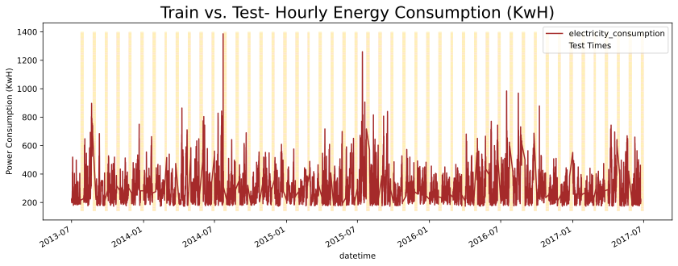
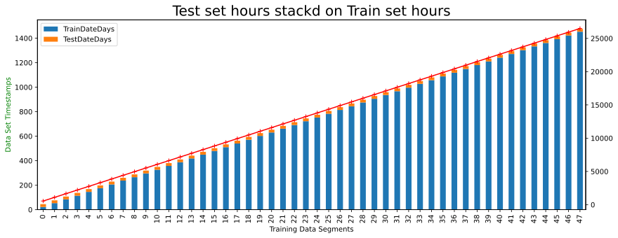
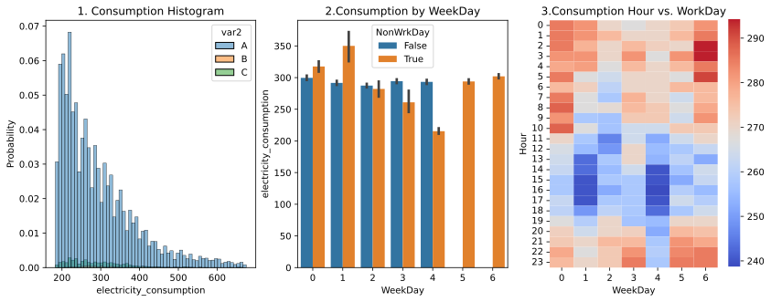
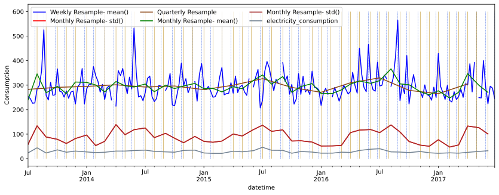
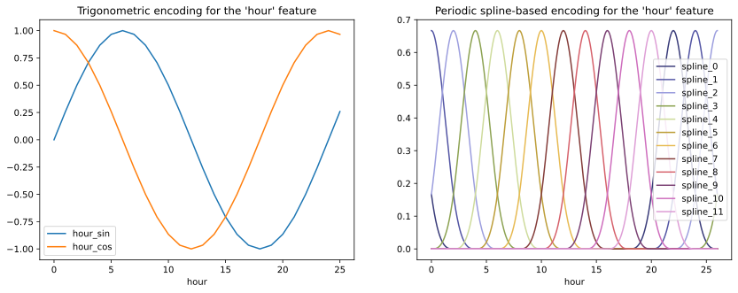
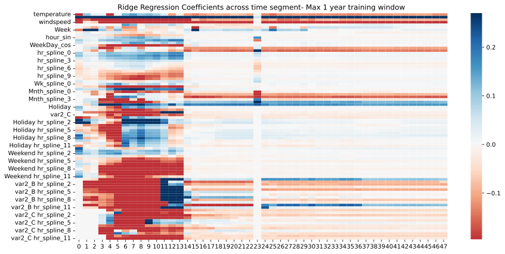
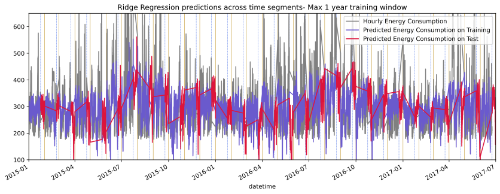
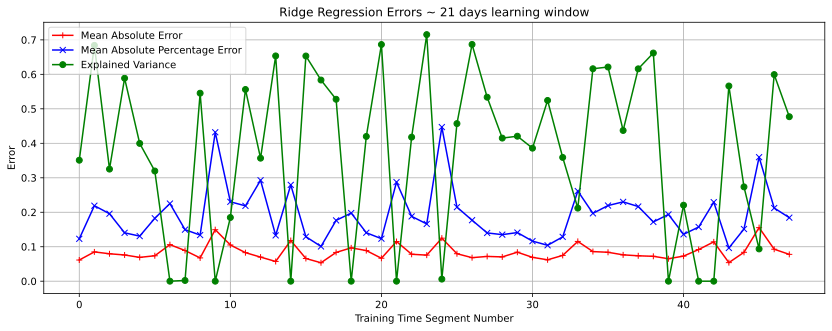
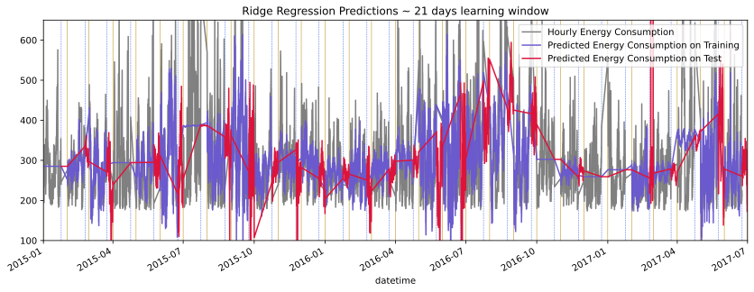
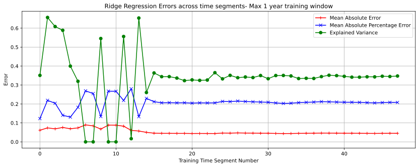

Forecasting & Prediction
Bad forecasts don't just miss — they cascade into inventory, staffing, and capital decisions downstream. This ensemble approach stabilizes at ~0.045 MAE once sufficient history accumulates, combining long-horizon and short-term Ridge models selected segment-by-segment. Fifty-plus interaction features carry signal no univariate model touches.
Temporal fusion transformers paired with external signal ingestion — weather, market events, operational context — are where forecast accuracy and business responsiveness converge for organizations ready to treat forecasting as core infrastructure.
Forecasting
Accurate forecasting improves predictability in the business environment. The ability to predict the future based on past trends helps in planning, business budgeting, and goal setting. The ability to accurately predict future demand and business size depends on the following:
- Historical data of time-varying signatures of a SMART metric that is relevant and representative of trends, seasonality, and cycles.
- Categorical — nominal and ordinal encodings of key drivers and barriers of demand, not just temporal seasonal changes.
- Clear understanding of attributable business initiatives that lead to improved demand.
- Robust pipeline for ingestion, quality assurance, and orchestration — every time step of prediction is a new prediction problem and needs automation.
- Model decisions that don't violate causality and are validated in a consistent manner along the direction of time.
Then of course there are unforeseen drivers such as the COVID-19 pandemic and the war in Ukraine. Predicting the future in such situations requires playing out "what if?" scenarios on historical data to curate specific facets of history to see how the long-term trend gets affected. This is really where business heuristics plays a role more so than any machine learning techniques.
Some of the reasons (but not limited to) why forecasting projects fail are as follows:
- Poor choice of target metrics. A forecasting target metric ought to be atomic and granular — compound corporate KPIs seldom make great candidates.
- Upstream data quality will in all likelihood play havoc with the stability and reliability of predictions into the future. An unstable pipeline is a great learning opportunity but isn't always successful in business support.
- Univariate time-series models are often used as a quick way to get around challenges of acquiring multivariate data, and leads to sub-par performance.
Illustrative Example
The example below is from an energy consumption forecasting use case. The energy consumption data spans approximately 4 years at an hourly level.

The problem is to predict the energy consumption for the test set that is interspersed across all 4 years for different lengths of time at an hourly level. These are the beige-colored vertical lines in the above figure.
Prediction Topology

The above diagram is a compact way to visualize the prediction problem at hand. The bars are stacked counts of data points in time that are consistent with causality — the orange are the group of points in test and the blue is the count of datetime data points in training that precede them. In effect, for building predictions for each orange set, the preceding blue set needs to be used.
Overall, this problem is akin to building weekly/daily forecasts based on previous business performance and demand. As more history accumulates, the ability to produce more accurate predictions improves. For example, in the 0th time segment the train/test set sizes are almost similar, whereas in the 47th time segment you have nearly 4 years of history to predict approximately 22 days — encompassing long and short-term signals.
Exploratory Analysis

- The histogram shows the consumption metric rendered by a categorical variable var2 with values A, B, and C. Values B and C are sparse, meaning without some kind of sampling approach it is unlikely we shall see much stand-alone impact in the prediction algorithm.
- This bar graph shows the distribution of consumption across each day of the week, rendered by non-working days — 5 and 6 being Saturday and Sunday. It appears that holidays on weekdays lead to higher consumption. A mental note to create a feature for holidays.
- The heatmap shows that weekends late at night show increased consumption, while weekdays after midday show lower load. This appears counter-intuitive but each use case has its own nuances that we need to build on. Four years of history provides enough data to generalize.

- This scatter plot rendered by season shows that the variable var1 has little or no relationship/causality with consumption.
- This scatter plot looks similar to the first one, giving reasons to think var1 and temperature are collinear.
- Wind speed has an inverse relationship with consumption. This is a non-linear relationship and gives us opportunities to model differently.

- Pressure and consumption show little relationship with each other.
- Temperature shows a linear decreasing relationship with consumption. Ditto for var1.

The monthly and quarterly means don't show any significant trend. However, towards the end the consumption pattern shows more variation around the long-term mean. The standard deviation, although range-bound, shows variation — resulting in some heteroscedasticity.
Model Development
Instead of pruning variables at the outset, time-segment-wise regularized Ridge Regression models were developed as a training harness using scikit-learn's make_pipeline(). As new time segments are added, the deployed model will develop a new model and score the most recent time segment based on history.
Feature Engineering
A total of ~85 features have been used in this exercise. The important classes are as follows:
- Base multivariate features:
'temperature', 'var1', 'pressure', 'windspeed' - Time-related features such as:
'Year', 'Month', 'Week', 'WeekDay', 'Hour' - Trigonometric features to capture cyclicity:
'hour_sin', 'hour_cos', 'WeekDay_sin', 'WeekDay_cos', 'Month_sin'as in the upper graph below. - Spline features: e.g.
'hr_spline_0', 'hr_spline_1', 'hr_spline_2', 'hr_spline_3'as shown in the lower graph below. - New binary features such as
'Holiday', 'Weekend' - One-hot encoded variables
'var2_B', 'var2_C' - ~50 interaction variables between hourly spline variables and categorical and binary variables to capture spikes and troughs due to interactions.

Training and Prediction
Two sets of models were developed — one looking at long-term data and the other at short-term performance. Both models use RidgeCV to optimize the Mean Absolute Error in a K=5 cross-validating framework for each of the 48 time segments.
Long-Term Window
The long-term window model looks back a maximum of one year of hourly data and has the following general formulation:
alphas = np.logspace(-10, 6, 25)
ts_cv = TimeSeriesSplit(
n_splits=5,
gap=48,
max_train_size= max(8760/4,int(.9*len(X_train))),
test_size= int(.1*len(X_train))
)
ridgecv = RidgeCV(alphas = alphas, scoring = 'neg_mean_absolute_error', normalize = True, cv= ts_cv).fit(X_train, y_train)

The above diagram is a heatmap of the coefficients of the features in the ridge regression. Until a year's worth of training data is available, the values fluctuate and appear unstable — after that the values appear consistent. The top 10 features with highest significance are:
['var1', 'windspeed', 'Mnth_spline_2', 'Mnth_spline_5', 'Month_cos', 'temperature', 'Mnth_spline', 'var2_B hr_spline_10', 'Month_sin', 'var2_B hr_spline_2']

The MAE value improves after the 13th time segment, presumably because the longer-term history helps stabilize the score. The MAE stabilizes at around ~0.045 after the 12th time segment — not bad, and works well when the long-term signal is isolated from the data using this model.

The above shows the long-term predictions of the test regimes across 47 models developed for each time segment in test. The predictions are all based on the best parameter optimization using MAE as a metric.
Short-Term Window
The short-term model is based on a maximum look-back of 3 weeks. This model will probably be less resilient to short-term noise than the long-term model. The cross-validation time split is as follows:
ts_cv = TimeSeriesSplit(
n_splits=5,
gap=48,
max_train_size= 1*int(.9*552),
test_size= int(.1*552)
)

The feature weights appear very unstable and keep changing their values and as a result their importance.

Overall the Explained Variance is better in some cases, but the MAE is lower than the long-term model.

The short-term model visually appears to have mapped the ups and downs better in some places than the long-term model, even though the overall error is higher.
Opportunistic Ensemble
So what is the final solution? Run the models at each time segment, compare the MAE, and choose the model that shows better MAE — as this is the metric used for optimization. The error profile is given in the diagram below. There is certainly scope for further investigation to improve the error rate.
